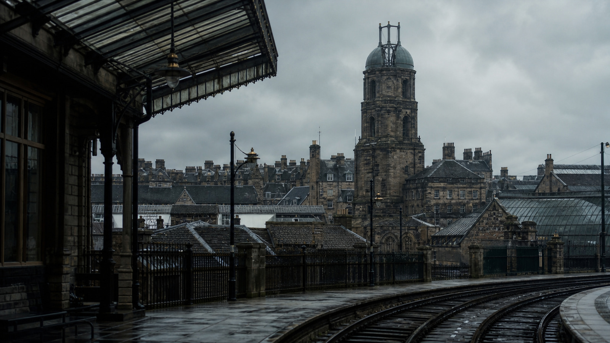

bellless_tower
鐘のない塔
外観は石造塔、上部の取付枠は空。鐘や音源を画像へ追加しない。
- Appearances
- shot-b01-01 / shot-b01-02 / shot-b06-03
- Forbidden drift
- 鐘、発音機構、確定した原因の追加。
- Future gate
- 空の取付枠と同じ塔のシルエットを照合し、音源を描かない。
PRIVATE CONTINUITY BIBLE · 7 EXACT ENTRIES
将来の生成・編集は各entryのinvariantとfuture gateを満たす必要があります。production、rights、canonの承認記録ではありません。

bellless_tower
外観は石造塔、上部の取付枠は空。鐘や音源を画像へ追加しない。
mira_workbench
同じ時計修理の職能、木製作業台の素材群、手元と衣装の扱いを維持し、新しい顔identityを加えない。
missing_brother_memo
同じ紙、折り目、インク系統、摩耗を維持し、新たに判読可能な未裏付け文言を加えない。
brass_moth
小型の真鍮製蛾モチーフ。作動、生命、超常性を確定しない。
clock_0917
時計面と記録の時刻は9:17。別時刻へ変更しない。
minute_name_ledger
同じ紙、罫線、「分」と人名の列、binding、wearを維持し、日本語labelはsource textではなくoverlayとして扱う。
council_institutional_space
同じarchitecture、glass、tableとroom period、fabric、light familyを維持し、実在人物やvillain lightingを加えない。